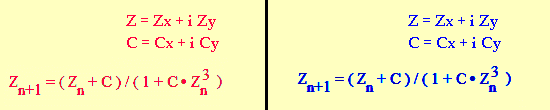
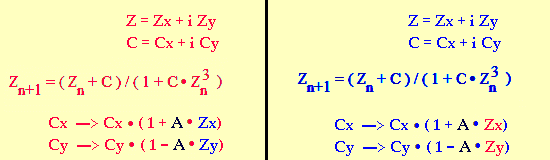
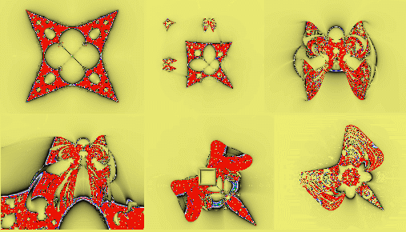
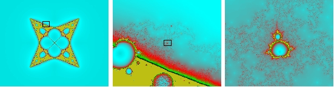
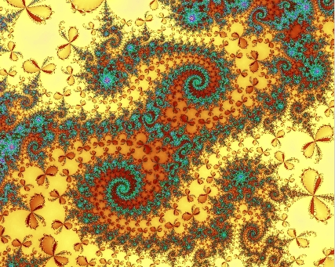
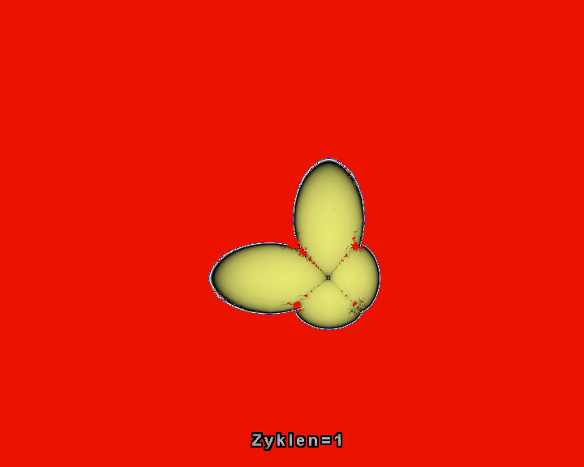

Hier eine
weitere Parallele zum biologischen Leben:
 parallel gerechnet. Eine Gleichung rot dargestellt, die andere blau. Nun werden diese zahlenmäßig durch den Faktor A gegenseitig miteinander verkoppelt:
 In den Fraktalen ergeben sich starke Ähnlichkeiten zu biologischen Formen. Der vierzackige Stern Z=(Z+C)/(1+C*Z) vom folgenden Bild stammt übrigens aus der Vierpoltheorie.  Der Verkopplungsbetrag A beginnt bei Null und steigt von Bild zu Bild an. Das ist so, also würden sie näher zusammenrücken, oder als würden sie wachsen und sich gegenseitig stärker beeinflussen. Es ähnelt dem Vorgang der wiederholten Zellteilung. Ohne Verkopplung entsteht ein vierzackiger Stern. Ab dem Koppelbetrag von 0.1 tauchen in der Ferne drei neue Bestandteile auf, die sich dem Stern nähern und beim Wert 0.4 mit ihm vereinigen. Das Teil an der Spitze ähnelt einem Hütchen oder einem Raumschiff, die beiden anderen sehen aus wie geflügelte engelartige Wesen. Der Stern verändert dabei seine Form, reckt sich den landenden Teilen entgegen, bekommt vorübergehend larvenähnliche Umrisse und wird schließlich ein Schmetterling. Dieser bleibt in der Form stabil über einen größeren Bereich, aber er wächst und fällt schließlich auseinander.
Verkoppelt man anders, entstehen auch andere Formen. Das landene Wesen hat hier keine Flügel, sondern ähnelt einer dicken Raupe. Ist die Insekten-Metamorphose dasselbe ? Ein spontanes Ändern der Verkopplungsart, wenn die Zellenzahl der Raupe eine Grenze überschreitet ? Tritt die Menschheit in diese Phase ein nach dem Erreichen von 10^10 Individuen ?
 siehe auch Startseiten-Hintergrundbilder auf www.vitaloop.de Auch
im Flügelmuster der Flügelblume
(3. Wurzel aus 1, gestörtes Newtonverfahren) finden sich die vom Apfelmännchen
bekannten Doppelspiralen: 
|
Animiertes Bild für Bild Landung-Stern, ausgewertet Zyklen 1 bis 32 (evtl. Seite neu laden, falls keine Veränderung):  A=0.4 Hier das Gleiche mit dem Stern (A=0)
|
{kind=link}
{kind=link}